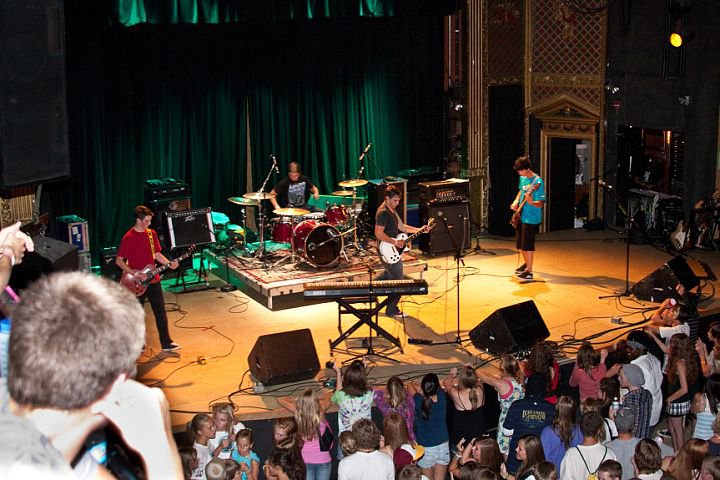

Get To Know Me
Quick Facts:
- Name: David Leonhardt
- Age: 23
- Birthday: August 28th, 1993
- Hometown: Denver
- Current City: Boulder
Intro:
I grew up just South of Denver in an average suburban neighborhood. I spent my younger years trying to learn everything I could. Whether I was trying to learn trigonometry so I could calculate how high my model rockets were flying, or trying to learn some new skill like yo-yoing, I always wanted to be doing something new and exciting. The desire to try new things carried over into my work life, so I have worked in many different fields. I have done landscaping, house remodeling, audio engineering, shipping management, housekeeping, and have even taken care of chickens for a few months.
Hobbies:
I have an insatiable love for the outdoors. Whether I'm up in the mountains climbing or backpacking or, I'm out cycling, being outside is very important to me. Music has also been a big part of my life. My parents started me on piano when I was 4 years old and I continued with classical lessons for the next 8 years. I really love piano but when I got a bit older I decided I wanted to learn a "cooler" instrument. I know most people would immediately think guitar when someone says they moved to a "cooler" instrument, but in elementary school I decided on violin and trumpet. Taking two music lessons a week ended up being too much for an elementary school kid so I went back to just piano lessons. Through high school I dabbled in bass, guitar, and mandolin, played in a successful band for a while, and wound up interning at a recording studio.
Family:
My parents, Cheryl and Steve, are both very supportive and caring people. Even though we have had our differences, I know that I am both who I am and where I am because of what they have pushed me to do and the opportunities they have given me. My dad is an environmental lawyer who deals primarily with water law and my mom takes care of the house and works with horses. I am an only child but our family had two dogs, Pint and Graden, who definitely felt like siblings at times.
Friends:
I have had a lot of friends come in and out of my life over the past few years, including my close friend Ashton who was my climbing partner for a few years. I am still in contact with all my friends from when I was in high school but we have all gone down separate paths and do not see each other very often. That being said, I feel like I have a great group of very supportive friends.
Conclusion:
I have tried a lot of things and have had a wide variety of experiences over my lifetime. I really look forward to seeing what comes next!